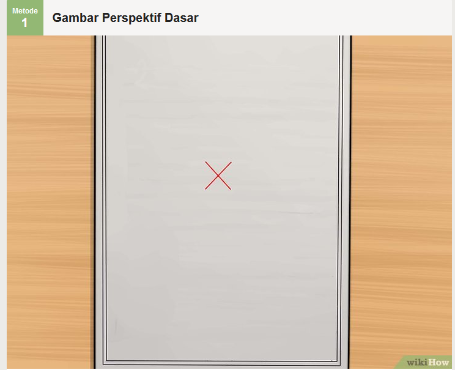
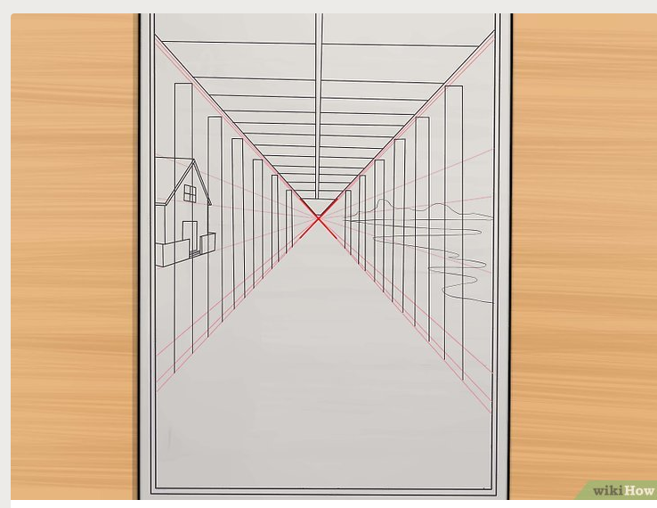
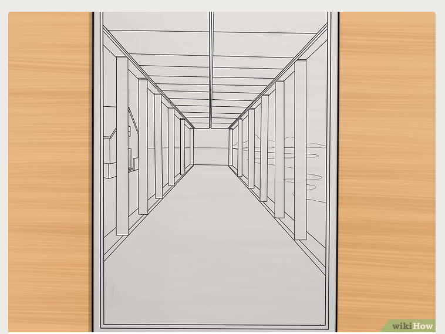

how to draw
selamat datang di kelah one point
prespektif titik satu adalah sudut pandang yang biasanya orang lain liat
one point
berikut adalah langkah-langkah membuat prespektif one point perhatikan dengan seksama ya
pertama butlah titik di sudut yang ingin di tarik garis
mulailah membuat sketsa dari menarik garis lurus dari titik yang kamu buat

mulailah membuat bangunan dengan menarik garis vertikal tapi mengunakan patokan garis miring dari tarikan titik pertam

butlah garis sesukamu tapi masih berpatokan pada titik awal

rapihkan agar benar-benar simetris

ketika sudah terbentuk bereskan semua yang tersisa
hapuslah sketsa yang ada dan jadilah prespektifmu
selamat mencoba....:v
trimakasih telah berkunjung mohon maaf kiranya ketika banyak kekurangan dari segalahal